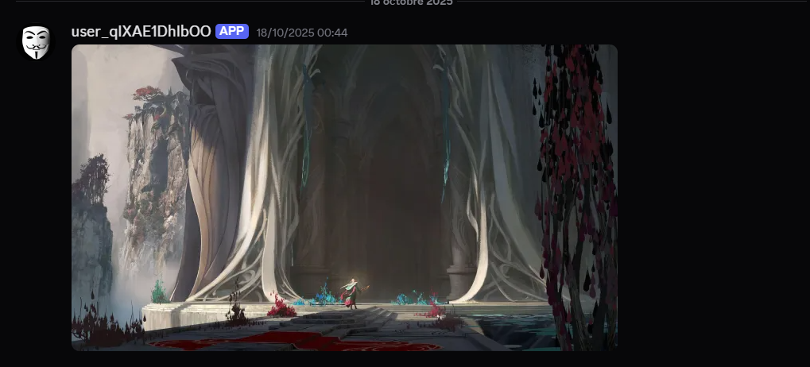
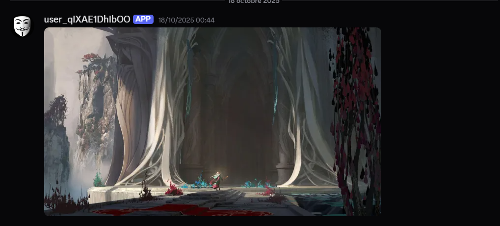

Masker Bot for Discord
Project Overview
The Masker Bot is a sophisticated Discord bot developed in Python, designed to facilitate anonymous communication within Discord servers. It empowers users to send messages and execute commands without revealing their identity, promoting open and candid discussions.
How It Works
Administrators designate a specific category within the server for anonymous interactions. Users can send messages or commands in designated channels, and the bot dynamically creates temporary bots with anonymous names to relay the content to the specified channel. This ensures privacy while maintaining server order.
Key Features
- Anonymous Messaging: Send messages without identity disclosure
- Command Handling: Execute commands anonymously
- Admin Controls: Robust admin and super admin command management
- Intuitive Interface: User-friendly design for easy adoption
- Temporary Bot Creation: Dynamic generation of anonymous entities
Context and Use Cases
Ideal for communities seeking honest feedback, sensitive discussions, or creative collaborations where identity might inhibit participation. Whether for gaming guilds, educational forums, or professional networks, the Masker Bot enhances engagement by removing barriers to expression.
Screenshots and Demonstrations
 
